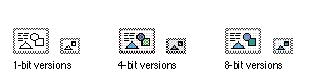

|
Edition IconsAn edition is a file that is created when a user chooses Create Publisher from the Edit menu. The edition icon has a rectangular outline in a horizontal orientation. Figure 8-39 shows the default icons that appear in the Finder if you don't supply a custom icon for editions.Figure 8-39 Default edition icons  You can customize an edition icon by putting a different graphic inside the rectangle. Maintain the horizontal orientation and the double-dotted line of the icon that identify it as an edition icon. See Inside Macintosh: Interapplication Communication for information on the Edition Manager human interface and implementing the Edition Manager. |